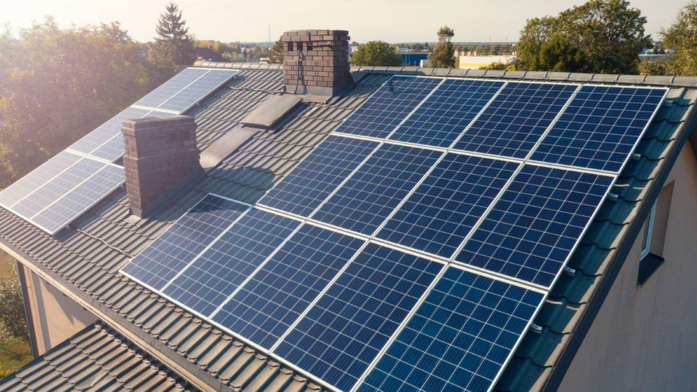
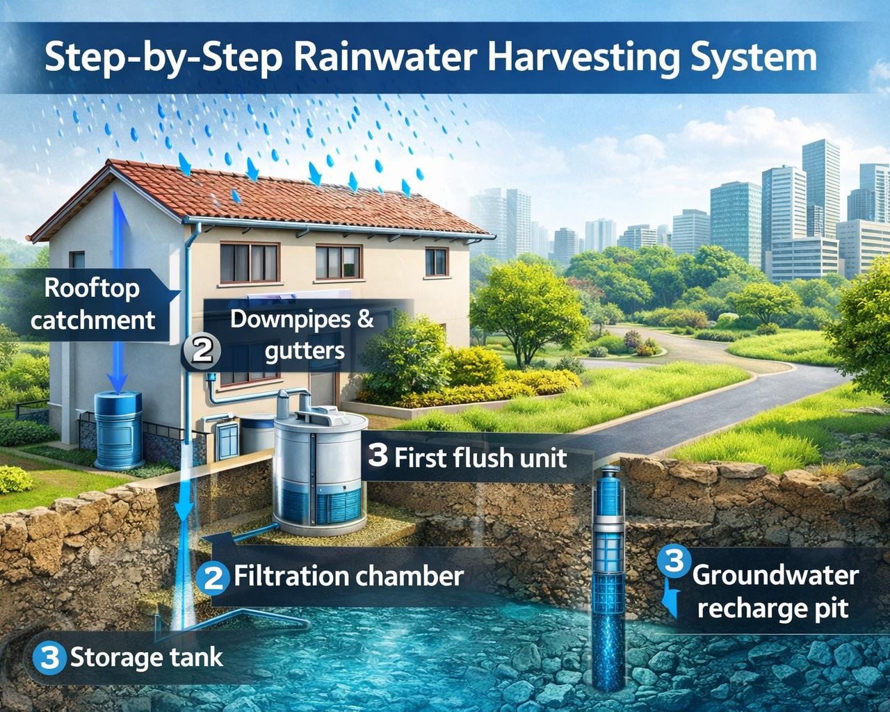
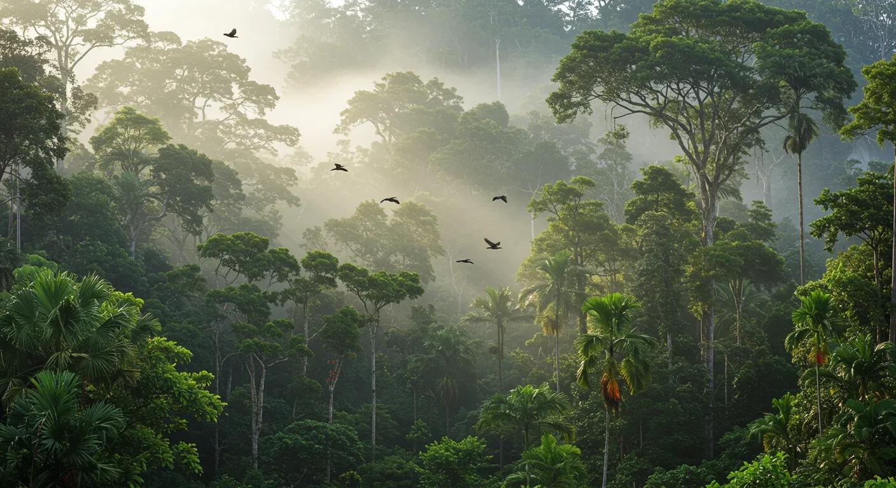
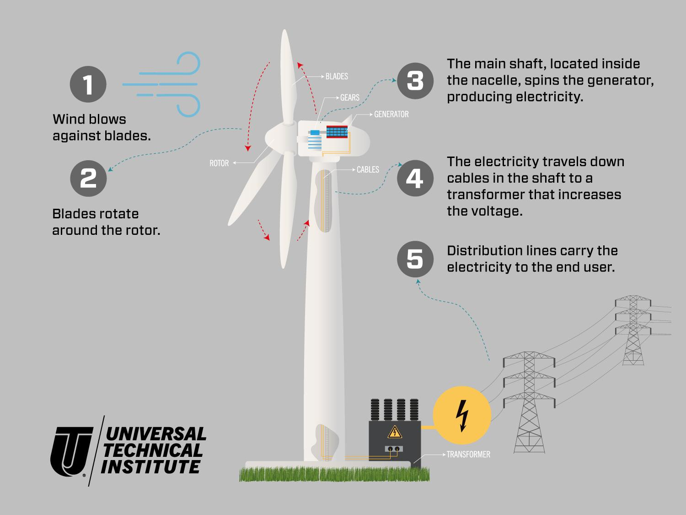
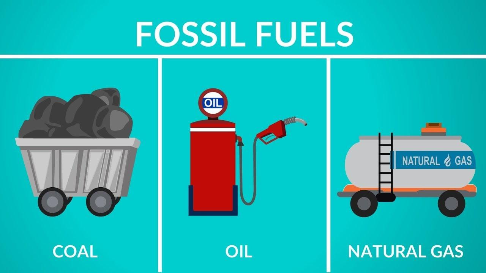
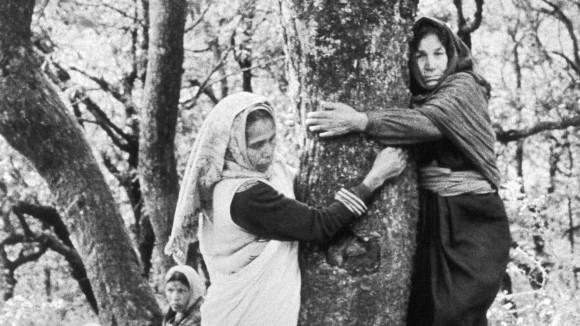
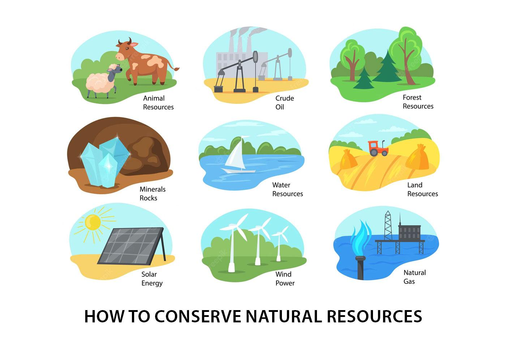

📘 Chapter 11: Nature's Treasures – Questions and Answers
1. Choose the Correct Answer
Question 1. Which of the following gases forms a major part of air?
- Oxygen
- Nitrogen
- Carbon dioxide
- Argon
Answer: (b) Nitrogen.
Question 2. Which of the following is not a fossil fuel?
- Wood
- Coal
- Petroleum
- Natural gas
Answer: (a) Wood.
Question 3. Which of the following is a non-renewable resource?
- Soil
- Sun
- Fossil fuel
- Air
Answer: (c) Fossil fuel.
Question 4. Which of the following is the least polluting fuel?
- Petrol
- Coal
- CNG
- Natural gas
Answer: (c) CNG.
Question 5. Which of the following is not provided by the forest?
- Food
- Wood
- Shelter
- Electricity
Answer: (d) Electricity.
2. Write True or False. Also, Rectify the Incorrect Statements.
Question 1. We cannot feel the air, but we can taste it.
Answer: False. We cannot see or taste air, but we can feel it when it moves as wind.
Question 2. Rainwater harvesting is a method to conserve water by collecting groundwater.
Answer: False. Rainwater harvesting is a method of conserving water by collecting and storing rainwater.
Question 3. Soil is formed by the weathering of rocks.
Answer: True.
Question 4. CNG is a clean motor fuel and causes less pollution.
Answer: True.
Question 5. Large-scale planting of trees is called deforestation.
Answer: False. Large-scale planting of trees is called afforestation. Deforestation means cutting down trees on a large scale.
3. Match the Columns
| Column A | Column B | Correct Match |
|---|---|---|
| 1. Global warming | (c) Burning of fuels | 1 – (c) |
| 2. Soil | (e) Formed by weathering of rocks | 2 – (e) |
| 3. Minerals | (a) Used in making jewellery | 3 – (a) |
| 4. CNG | (b) Clean motor fuel | 4 – (b) |
| 5. Deforestation | (d) Large-scale cutting of trees | 5 – (d) |
4. Give Two Examples of Each
Question 1. Natural resources.
Answer: Air and water.
Question 2. Renewable resources.
Answer: Sunlight and wind.
Question 3. Non-renewable resources.
Answer: Coal and petroleum.
Question 4. Fossil fuels.
Answer: Coal and natural gas.
Question 5. Forest products.
Answer: Wood and honey.
5. Name the Natural Resources
Question 1. It cannot be seen but can be felt.
Answer: Air.
Question 2. It is used for drinking and washing.
Answer: Water.
Question 3. It is used for drying clothes.
Answer: Sunlight.
Question 4. It provides shelter to many plants, animals and insects.
Answer: Forest.
Question 5. Dead plants and animals become part of it when they are decomposed.
Answer: Soil.
6. Define the Following Terms
Question 1. What are renewable resources?
Answer: Renewable resources are natural resources that can be replaced or renewed by nature in a short period of time. Examples are sunlight, wind and water.
Question 2. What are non-renewable resources?
Answer: Non-renewable resources are natural resources that take millions of years to form and cannot be replaced quickly. Examples are coal, petroleum and natural gas.
Question 3. What is rainwater harvesting?
Answer: Rainwater harvesting is the process of collecting and storing rainwater for future use.
Question 4. What is deforestation?
Answer: Deforestation is the cutting down of trees on a large scale to clear forest land for other purposes.
Question 5. What is global warming?
Answer: Global warming is the gradual increase in the average temperature of the Earth due to an increase in greenhouse gases in the atmosphere.
7. Answer the Following Questions Briefly
Question 1. How is the soil formed?
Answer: Soil is formed by the breaking down of rocks into small particles through weathering. Dead plants and animals also decompose and add organic matter to the soil. This process takes a very long time.
Question 2. What are solar panels? What are they used for?
Answer: Solar panels are devices that convert sunlight into electrical energy.
They are used for:
- Generating electricity.
- Running lights and fans.
- Heating water with solar systems.
- Charging batteries and other devices.

Question 3. Define deforestation. What can be done to reduce it?
Answer: Deforestation means cutting down trees on a large scale.
We can reduce deforestation by:
- Planting more trees.
- Avoiding unnecessary cutting of trees.
- Recycling and reusing paper.
- Protecting forests and wildlife.
- Creating awareness among people.
Question 4. Explain how water is conserved using rainwater harvesting.
Answer: Rainwater harvesting is a method of collecting and storing rainwater.
- Rainwater is collected from rooftops.
- Pipes carry the water to a storage tank or recharge pit.
- The stored water can be used later.
- Some rainwater is allowed to enter the ground to recharge groundwater.
This method helps save water and increases the availability of groundwater.

Question 5. Define sustainable development.
Answer: Sustainable development means using natural resources carefully to meet our present needs without harming the ability of future generations to meet their needs.
8. Answer the Following Questions in Detail
Question 1. Why is forest an important natural resource?
Answer: Forests are very important natural resources. They provide many useful things and help maintain the balance of nature.
The importance of forests is explained below:
- Provide Oxygen: Trees release oxygen during photosynthesis.
- Provide Food: Forests provide fruits, nuts, honey and other food materials.
- Provide Shelter: Forests are homes for many animals, birds, insects and plants.
- Provide Wood: Trees provide wood used for furniture, houses and other purposes.
- Prevent Soil Erosion: Tree roots hold the soil and prevent it from being washed away.
- Help in Rainfall: Forests play an important role in the water cycle.
- Reduce Global Warming: Trees absorb carbon dioxide from the atmosphere.
- Provide Medicines: Many plants found in forests are used to make medicines.

Conclusion: Forests are essential for life on Earth. We should protect forests and plant more trees.
Question 2. Explain the composition of air. How is it used to generate electricity?
Answer: Air is a mixture of different gases. It also contains water vapour, dust particles and other substances.
Composition of Air
| Gas | Approximate Percentage |
|---|---|
| Nitrogen | 78% |
| Oxygen | 21% |
| Other gases (including argon and carbon dioxide) | About 1% |
Uses of Air in Generating Electricity
Moving air is called wind. Wind energy can be used to generate electricity.
- Wind turns the blades of a wind turbine.
- The blades rotate a shaft inside the turbine.
- The shaft drives a generator.
- The generator converts mechanical energy into electrical energy.

Conclusion: Air is essential for life, and moving air (wind) is also a renewable source of energy.
Question 3. What are fossil fuels? Why should we use fossil fuels responsibly?
Answer: Fossil fuels are fuels formed from the remains of dead plants and animals buried under the Earth for millions of years.
Examples of Fossil Fuels
- Coal.
- Petroleum.
- Natural gas.
Uses of Fossil Fuels
- Coal is used in some power plants and industries.
- Petroleum is used to make petrol and diesel.
- Natural gas is used for cooking and generating electricity.
Why Should We Use Fossil Fuels Responsibly?
- Fossil fuels are non-renewable resources.
- They take millions of years to form.
- Their burning causes air pollution.
- They release carbon dioxide, which contributes to global warming.
- They may become exhausted if used carelessly.
Ways to Save Fossil Fuels
- Use public transport.
- Walk or cycle for short distances.
- Switch off vehicles when not needed.
- Use renewable energy such as solar and wind energy.
- Avoid wasting electricity.

Conclusion: We should use fossil fuels carefully and encourage the use of renewable energy.
Question 4. Give an example where communities came together to save forests.
Answer: The Chipko Movement is a good example of people coming together to save forests.
- The movement started in the Himalayan region of Uttarakhand in the 1970s.
- Local villagers, especially women, played an important role.
- They hugged trees to prevent them from being cut down.
- They peacefully protested against the cutting of trees.
- Gaura Devi was one of the important women leaders associated with the movement.
Importance of the Chipko Movement
- It created awareness about forest conservation.
- It showed the importance of community participation.
- It encouraged people to protect trees and the environment.

Conclusion: The Chipko Movement teaches us that people can work together to protect forests and nature.
Question 5. What are the ways in which natural resources can be conserved?
Answer: Natural resources are important for all living beings. We should use them carefully and avoid wasting them.
1. Conservation of Water
- Turn off taps when not in use.
- Repair leaking taps and pipes.
- Use rainwater harvesting.
- Avoid wasting water.
2. Conservation of Forests
- Plant more trees.
- Avoid unnecessary cutting of trees.
- Reuse and recycle paper.
- Protect wildlife and forest areas.
3. Conservation of Air
- Use cleaner fuels such as CNG.
- Use public transport.
- Plant more trees.
- Reduce smoke and harmful gases.
4. Conservation of Soil
- Plant trees and grasses.
- Avoid excessive use of chemical fertilisers.
- Prevent deforestation.
- Use proper farming methods.
5. Conservation of Energy Resources
- Switch off lights and fans when not needed.
- Use solar energy.
- Use energy-efficient appliances.
- Avoid unnecessary use of petrol and diesel.

Conclusion: We should conserve natural resources because they are essential for our lives and for future generations.
9. Additional Important Questions and Answers
Question 1. What are natural resources?
Answer: Natural resources are materials and substances obtained from nature that are useful to living beings. Examples include air, water, soil, sunlight and forests.
Question 2. What is the difference between renewable and non-renewable resources?
Answer:
| Renewable Resources | Non-Renewable Resources |
|---|---|
| They can be renewed naturally. | They cannot be renewed quickly. |
| They are generally available again within a short period. | They take millions of years to form. |
| Examples: Sunlight and wind. | Examples: Coal and petroleum. |
Question 3. Why is air important for living things?
Answer: Air is important because:
- Humans and animals need oxygen for respiration.
- Plants use carbon dioxide for photosynthesis.
- Wind helps in the movement of seeds and pollen.
- Air helps in the water cycle.
Question 4. What is soil erosion?
Answer: Soil erosion is the removal of the top layer of soil by wind or water. Plant roots help prevent soil erosion.
Question 5. What are minerals?
Answer: Minerals are naturally occurring substances found in the Earth's crust. They are used in making jewellery, buildings, machines and many other things.
Question 6. What is afforestation?
Answer: Afforestation is the process of planting trees on land where there were few or no trees before.
Question 7. What is the greenhouse effect?
Answer: The greenhouse effect is the process in which certain gases in the atmosphere trap heat and keep the Earth warm.
Question 8. What is CNG? Why is it considered a cleaner fuel?
Answer: CNG stands for Compressed Natural Gas. It is considered a cleaner fuel because it produces less air pollution than petrol and diesel when used in vehicles.
Question 9. Why should we save water?
Answer: We should save water because all living things need it to survive. Fresh water is limited, and wasting it can cause water shortages.
Question 10. How do forests help in maintaining the balance of nature?
Answer: Forests provide food and shelter to living organisms, absorb carbon dioxide, release oxygen, prevent soil erosion and support the water cycle.
Question 11. What are the main products obtained from forests?
Answer: The main forest products are wood, fruits, honey, gum, rubber, medicines and paper-making materials.
Question 12. How does burning fossil fuels affect the environment?
Answer: Burning fossil fuels releases smoke and harmful gases. It causes air pollution and increases greenhouse gases, which contribute to global warming.
10. Quick Revision – Important Points
- Air, water, soil, sunlight and forests are natural resources.
- Nitrogen forms about 78% of air.
- Oxygen forms about 21% of air.
- Soil is formed by the weathering of rocks and the decomposition of organic matter.
- Coal, petroleum and natural gas are fossil fuels.
- Fossil fuels are non-renewable resources.
- Sunlight and wind are renewable resources.
- CNG is a cleaner motor fuel.
- Rainwater harvesting helps conserve water.
- Deforestation means cutting down trees on a large scale.
- Afforestation means planting trees.
- Forests provide food, wood, medicines and shelter.
- Global warming is the gradual increase in the Earth's average temperature.
- Wind turbines use wind energy to generate electricity.
- Sustainable development means meeting present needs without harming the needs of future generations.
- The Chipko Movement is an example of community participation in forest conservation.
11. Chapter Summary
Nature provides us with many useful resources, such as air, water, soil, sunlight, minerals and forests. These resources are essential for the survival of all living beings.
Some resources, such as sunlight and wind, are renewable, while others, such as coal, petroleum and natural gas, are non-renewable. We must use natural resources carefully because many of them are limited.
Deforestation, pollution and excessive use of fossil fuels harm the environment. We can protect nature by planting trees, saving water, using clean energy, recycling materials and preventing pollution.
Message of the Chapter
Natural resources are precious gifts of nature. We must conserve them today to make the Earth a better place for future generations.
MCQ Quiz
अध्याय के वस्तुनिष्ठ प्रश्नों का अभ्यास करें।
MCQ Quiz शुरू करेंPDF Notes
इस अध्याय के नोट्स PDF में पढ़ें या डाउनलोड करें।
📄 View PDF ⬇️ Download PDF